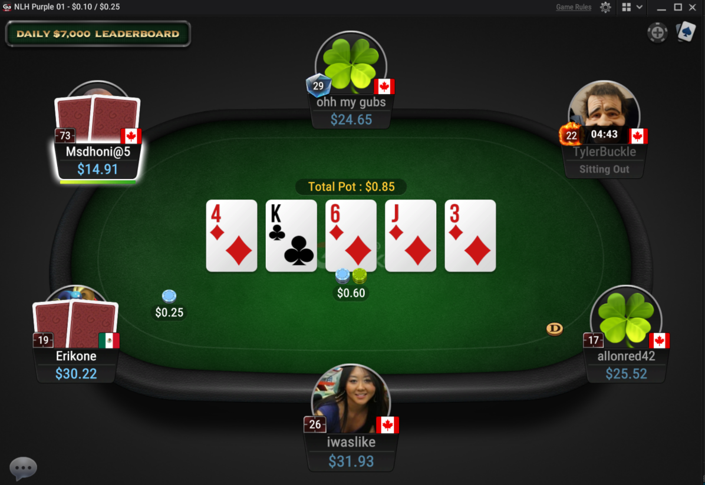
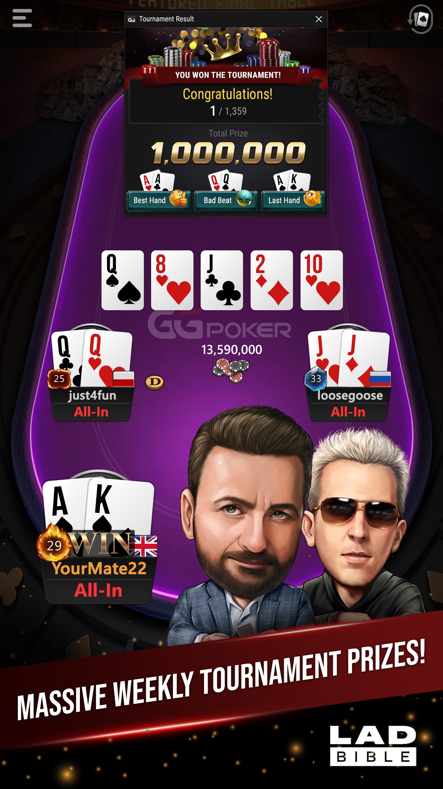

桌面参照 · GG red felt
1176 × 888 · 首选
这页只记录参照、量化关系和现状截图入口，不改变 apps/web/src/widgets/table/。所有验收都以“谁盖谁、谁在桌内/桌外、相邻关系、目标比例”为判据。

currentUrl=/room/<id>
viewport=390×844| 对象 | 参照结论 | 量化 gate | 证据状态 |
|---|---|---|---|
| 桌体 | 桌面横椭圆；手机竖椭圆/钟形，向下延伸。 | 桌面外缘宽:高 = 1.65:1 ± 0.10；手机外缘高:宽 ≥ 1.35:1，且长轴为垂直。 | 待现状截图 |
| 座位单元 | 圆形头像在 felt 外缘；深色圆角姓名/筹码胶囊紧贴头像正下方、压桌沿略朝桌内。 | 头像直径 = 桌宽 9% ± 2%；胶囊中心 x 与头像中心差 ≤ 头像直径 10%；名字在上、筹码在下。 | 当前文档记录缺头像 |
| 牌背 / 头像 | 弃牌两张牌背插在头像后方，牌背顶部高出头像，且明显重叠。 | 牌背 z-index < 头像；牌背与头像有正面积交叠；牌背顶部 y 小于头像顶部；不得用“0px²”验收。 | 当前结构差距 |
| 摊牌 / hero | 摊牌牌浮在头像上方不挡脸；桌面 hero 在 felt 内下缘、头像/pod 上方；手机 hero 放大到底部中央。 | 摊牌牌层高于头像且头像脸部无遮挡；手机 hero 中心 x = 桌中心 ± 5%，牌组宽 ≥ 桌宽 30%。 | 待截图 |
| 底池 | 桌面中央上方文字胶囊；手机筹码堆+数字；ClubGG 文字胶囊仅作变体参考。 | 桌面 pot 中心 x = 50% ± 3%，y 位于桌中心上方；桌面不得依赖筹码图标；手机必须出现筹码堆图形和数字。 | 部分已知 |
| 公共牌 | 中央一排 5 张，大号；手机明显放大。 | 摊牌/turn/river 时恰好 5 张，单排、中心对齐；preflop 必须 0 张。 | 需运行时核对 |
| 下注筹码 | 每个下注者与中央之间的 felt 上是筹码堆+金额；不是座位名牌里的数字替代。 | 筹码堆位于下注者与桌中心的连线上、且在 felt 内；金额紧邻筹码堆；每个下注者最多一侧堆。 | 待截图 |
| D 位置 | 黄色 D 圆盘在 felt 上，不在座位旁；桌面无 SB/BB 字母徽章。 | D 的圆心位于 felt 内；与任一头像中心距离 ≥ 头像直径 1.5 倍；桌面 SB/BB 徽章数量 = 0。 | 待截图 |
夹具本身可离线打开，但“当前渲染”必须来自真实 Vite + 已登录房间。使用浏览器截图保存到临时目录后，把文件名和 viewport 写回 L0 报告；禁止拿旧图片充数。
npm run dev -w @4am/web -- --host 127.0.0.1 --port 4173。http://127.0.0.1:4173/room/<真实房间 id>，完成登录并等待桌面稳定。?desktop=...&phone=... 的本地替换版），同时记录提交 SHA。本轮在无可用登录凭据/真实房间的环境下没有伪造截图，因此现状证据项保持“待截图”，不宣称 L0 已验收。